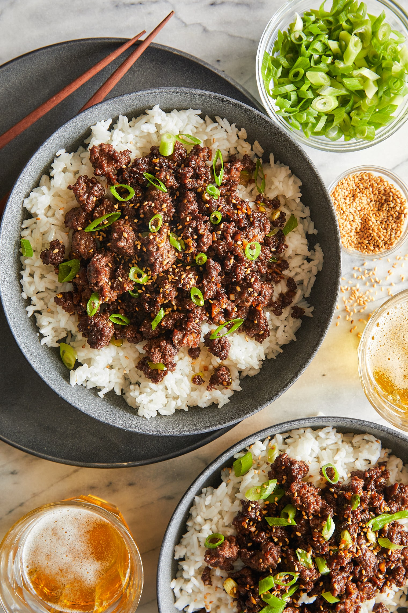

Korean Beef Bowls

This recipe is relatively easy, cheap, and fast for the fast lifestyles of everyday families.
It uses a lot of everyday ingredients so you shouldn't have to shop for too much outside of your everyday
cabinet contents. Make sure you are timing the different components of the dish or you
will end up with a cold and hot combination which is less than desireable. This recipe
serves 3-4 people.
Ingredients needed for this dish:
- 1 cup cooked jasime rice
- 1 lb ground beef (80/20 or 85/15 preferable)
- 2 tblsp brown sugar
- 1 tblsp red pepper flakes
- 1/4 cup low sodium soy sauce
- 1 tsp sesame oil
- pinch of salt and pepper
- 1 tsp toasted sesame seeds
For the beef:
- Bring a medium sized pan to medium-high heat and brown the beef.
- Once browned reduce heat to low
- In a small bowl mix together the brown sugar, soy sauce, red pepper flakes
sesame oil, salt, and pepper
- Add the mixture to the beef and reduce to medium heat and simmer for 3-5 minutes until sauce is evenly spread over the beef
- Remove beef from heat and serve over rice
- Top with green onion and sesame seeds
- Enjoy!